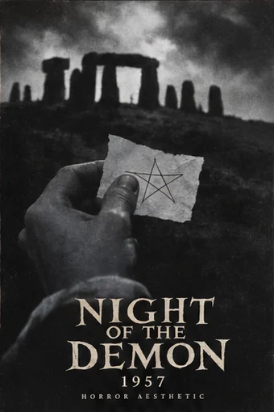

Ночь демонаNight of the Demon (1957)
Режиссёр: Жак Турнёр · СверхъестественноеDirector: Jacques Tourneur · Supernatural
Американский психолог пытается разоблачить проклятие, а на его пути всё время появляется клочок бумаги.An American psychologist tries to explain away a curse while a scrap of paper keeps turning up in his path.
Найалл Макгиннис наделяет оккультиста непринуждённостью человека, который отлично изучил своего гостя. Особенно тревожен детский праздник, где дневное развлечение соседствует с демонстрацией власти.
Появление демона делит фильм на два вида испуга. В длинной середине действуют фактура, погода и сроки. На железной дороге спор о суеверии превращается в срочный вопрос о том, что один человек сумеет вручить другому.
Niall MacGinnis gives the occultist the easy manners of a man who understands his guest's habits. The child's party at his house is especially unsettling, because Tourneur lets an afternoon of entertainment and a display of power occupy the same space.
The visible demon divides the film into two kinds of scare. The long middle belongs to texture, weather and deadlines, and the railway climax turns a theory about superstition into the urgent problem of what one person can get another to accept.